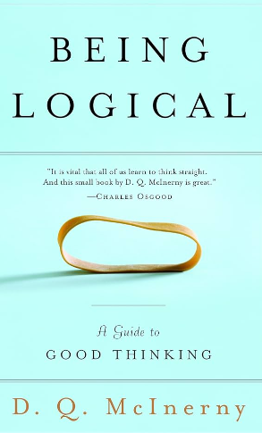

- Non-Verbal Reasoning

Being Logical: A Guide to Good Thinking
D.Q. McInerny
"Being Logical: A Guide to Good Thinking" is a book written by D.Q. McInerny. This book provides valuable insights into the principles of logical thinking and reasoning. It offers guidance on how to think more effectively, make better decisions, and communicate more clearly through the application of logical principles. It's a useful resource for anyone looking to enhance their critical thinking skills.
Logical Reasoning Next Level
NA
"Logical Reasoning Next Level" is likely a book or resource that focuses on advanced logical reasoning techniques. These types of materials are often used for competitive exams, such as aptitude tests and entrance exams, to help individuals further develop their logical thinking and problem-solving skills. These resources typically cover complex logical puzzles, advanced reasoning exercises, and strategies to excel in challenging reasoning-based questions.
Logical Reasoning
NA
Logical reasoning refers to the ability to think critically, analyze information, and make sound decisions based on evidence and logical principles. It involves identifying patterns, drawing conclusions, and solving problems by applying deductive and inductive reasoning. Logical reasoning is crucial in various aspects of life, including problem-solving, decision-making, and academic or professional assessments. It is often a part of standardized tests and competitive exams to evaluate an individual's cognitive abilities.
Non-Verbal Reasoning Practice Test 1
Agrawal
Non-verbal reasoning tests assess an individual's ability to analyze and solve problems using visual information and patterns rather than relying on written or spoken language. These tests typically involve a series of diagrams, shapes, or patterns, and the test-taker must identify relationships, complete sequences, or make predictions based on the visual elements.
Data Interpretation and Logical Reasoning
Arun Sharma
"Data Interpretation and Logical Reasoning" by Arun Sharma is a popular book among students preparing for competitive exams, particularly in India. Arun Sharma is a well-known author in the field of aptitude and competitive exam preparation. This book focuses on helping students improve their data interpretation and logical reasoning skills, which are essential for various entrance exams, including CAT (Common Admission Test), MAT (Management Aptitude Test), and other similar tests. It includes a wide range of practice exercises, strategies, and tips to excel in these sections of the exams
Logical Reasoning and Data Interpretation for CAT
Nishit K. Sinha
The book "Logical Reasoning and Data Interpretation for CAT" by Nishit K. Sinha is a comprehensive resource for MBA entrance exam preparation, with a primary focus on the CAT (Common Admission Test). It provides fully-solved practice exercises, previous years' papers for CAT, XAT, and IIFT, and different challenge levels to help students boost their scores. The book is designed to help students understand concepts and apply strategies effectively in these critical exam sections, making it valuable for various MBA entrance examinations beyond CAT. The author, Nishit K. Sinha, is a well-regarded name in the field of CAT and MBA exam preparation.
Quantitative Aptitude
R.S. Aggarwal
"Quantitative Aptitude" by R.S. Aggarwal is a widely recognized and highly popular book for improving quantitative aptitude and mathematical skills. This book offers a comprehensive approach to various mathematical concepts and quantitative problem-solving techniques. It is particularly valuable for individuals preparing for competitive exams, including bank exams, government job exams, and other tests that assess quantitative aptitude.